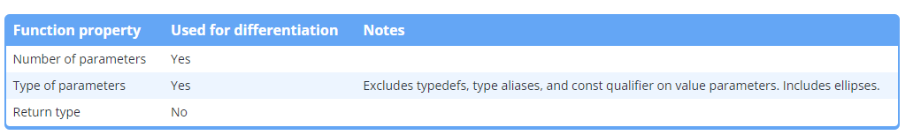

Code
#' covert from int to double
#double fa {3};
d = 6;
#' non-Boolean
if (5)
{
}The compiler coverts from one data type to another data type. This si type conversion. For example, float f{ 3 }.
This is also called automatic type conversion or coercion: the compiler coverts implicitly when we require one type of data but different type of data is supplied.
#' covert from int to double
#double fa {3};
d = 6;
#' non-Boolean
if (5)
{
}The compiler will find the how to convert from current data type to the desired data type. If it can find, it will covert. Otherwise, it returns compile error.
C++ defines the standard conversion rules:
Floating-point and integral promotion are two types of numeric promotion. Numeric promotion is the conversion of a narrower numeric type (char) to a wider numeric type (int or double).
All numeric promotion are value-preserving and it helps to reduce redundancy.
Floating-point promotions: value from float to double.
Integral promotions:
short s = 3; # int to short
long l = 3; # int to long
char ch = s; # short to charfloat f = 3.0; # convert double to float
long double ld = 3.0 # covert double to long doubleint d = 3.5;double d = 3;bool b1 = 3; # convert int to bool
bool b2 = 3.0; # convert double to boolNumeric conversion sometimes causes the loss of data (from floating type to int, from wider type to narrower type,…).
If we want the conversion, it is better to explicit by using static_cast<type>(var).
Narrowing conversion does not allow to use brace initialization
int main()
{
int i {3.5}; # won't be compile
}What type of the following:
int x{2 + 3}: both operands are int, so it is int??? y{2 + 3.5}: one is int and one in floating type. So, compiler use usual arithmetic conversionsThe compiler has a prioritized list of types:
There are two rules:
int i{ 2 };
double d{ 3.5 };
std::cout << typeid(i + d).name() << ' ' << i + d << '\n';
short a{ 4 };
short b{ 5 };
std::cout << typeid(a + b).name() << ' ' << a + b << '\n';Avoid using unsigned integer.
When we want to covert from one type to wider type, implicit type conversion is fine.
In the case the like double d = 10 / 4 will give the result is 2.0. We can change like this double d = 10.0 / 4.0, but if we have
int x{10};
int y{4};
double d = x / y;How do we tell the compiler to use floating type instead of integer. In C++, we use type casting operators to request it. This is usually called explicit type conversion.
In C programming, cast are done via ()operator, with name of type to convert the value placed inside the parentheses
#|label: c-style
int main()
{
int x {10};
int y {4};
double d { (double)x / y}; #convert x to double
}But c-style cast can create some risk: it includes static cast, const cast, and reinterpret cast. Thus, avoid using C-style cast.
We should use this to convert a value from one type to another type.
Use static_cast to make the narrowing conversions explicit.
Here is an example of type aliases:
using Distance = double;
Distance mile{3.0};
## Using fo legibility
int gradeTest();
### Or
using TestScore = int;
TestScore gradeTest();
## For easier code maintenance
Using StudentID = short
## Then, we want to change
using StudentID = longType aliases should be used if there is clear benefit to code readability and code maintenance.
Type deduction allows the compiler to deduce the object’s type basing on its initializer. We use the code auto:
auto d{ 5.0 };
auto i{ 1 + 2 };
auto x{ i };
int add(int x, int y)
{
return x + y;
}
int main()
{
auto sum{ add(5, 6) }; # add() returns an int, so sum's type will be deduced to int
return 0;
}
#> Type deduction drop the `const`
const int x { 5 }; # x has type const int
auto y { x }; # y will be type int (const is dropped)
const auto z { x }; # z will be type const int (const is reapplied)
#!!! Attention to string types
const int x { 5 }; // x has type const int
auto y { x }; // y will be type int (const is dropped)
const auto z { x }; // z will be type const int (const is reapplied)Type deduction has some advantages:
But, still have some downsides
auto y { 5 }; give int not double.Use type deduction for your variables, unless you need to commit to a specific type.
We can also use type deduction for function but it requires more concensus:
return in the body has to return the same type, otherwise, there is errorFavor explicit return types for function over return type deduction for normal functions.
Type deduction cannot be used for function’s parameters prior to C++20.
Function overloading allow us to create multiple functions with the same name, so long as each functions has different parameters types or can be differentiated by the compiler.
Each function sharing a name is called an overloaded function or overload. For example, we can simply define two add() functions:
#include <typeinfo>
#include <string_view>
#include <iostream>
int add(int x, int y)
{
return x + y;
}
double add(double x, double y)
{
return x + y;
}
int main()
{
return 0;
}Use function overloading to make your program simpler
In this section, we learn how the compiler differentiates overloaded functions.

A function’s signature is defined as the part of the function including function’s name, parameter’s parameter, parameter’s types, and function-level qualifiers. Not return type.
How to match a function call for overloaded functions? The compiler has to find the best match, this is overload resolution.
The compiler applies a bunch of different type conversions to the arguments, then checks if any of the overloads match. There are three possibilities:
1. No matching functions were found. Move to the next steps in the sequence
2. A single matching functions was found. The matching process is complete, no further steps.
3. More than one matching functions. The compiler return error.One or more overloads are possible to match
A default argument is a default value provided for a function parameter.
void print(int x, int y = 10)
{
std::cout << "x: " << x << '\n';
std::cout << "y: " << y << '\n';
}There are some rules
void print(int x=10, int y); # not allowed#include <iostream>
void print(int x, int y=4); // forward declaration
void print(int x, int y=4) // error: redefinition of default argument
{
std::cout << "x: " << x << '\n';
std::cout << "y: " << y << '\n';
}Best practice is to declare default argument in forward declaration, not in function definition.
Can be use in overloaded functions:
void print(int x);
void print(int x, int y = 10);
void print(int x, double y = 20.5);
print(1, 2); # will resolve to print(int, int)
print(1, 2.5); # will resolve to print(int, double)
print(1); # ambiguous function callHow can we write a function max(x, y) to find the greater value between two variables and this function applies to type int, double, long int, long double so that we do not need to have overloaded function?
Welcome to the world of C++ templates!
We create a template to describe how a function or a class looks like. In the template, we have placeholders represents some unknown types that is replaced later.
Then, compiler uses defined template to generate the overloads (or classes) using different actual types.
Templates work with types did not even exist when the template was written, thus it is flexible and future proof.
Function template is a function-like definition to generate overloaded functions.
We use placeholder types (type template parameters) for any parameter types, return types or types in the functio body.
We create a template function max as an example:
template <typename T>
T max(T x, T y)
{
return (x < y) ? y / x;
}Creating a function from template function is function template instantiation
We can also use deduction for calling a template function.
There are also template parameters and non-template parameters in template function.
We place templates in the header file to use in multiple fine by #include. This allow the compiler to see full template function and instantiate.
Use function templates to write generic code that can work with a wide variety of types whenever you have the need.
In one template type parameters, why does the compiler use numeric conversion for two types?
Answer: type conversion is only when resolving function overloads, not performing template argument deduction.
Here is an example:
#include <iostream>
template <typename T, typename U> // multiple template types
auto max(T x, U y) // auto for deduction the return type.
{
return (x < y) ? y : x;
}
int main()
{
std::cout << max<int>(2, 3) << '\n';
std::cout << max<double>(2, 3) << '\n';
std::cout << max(2, 3) << '\n';
std::cout << max(2, 3.5) << '\n';
return 0;
}From C++20:
auto maxAuto(auto x, auto y)
{
return (x < y) ? y : x;
}Please read this Chapter’s summary Here.